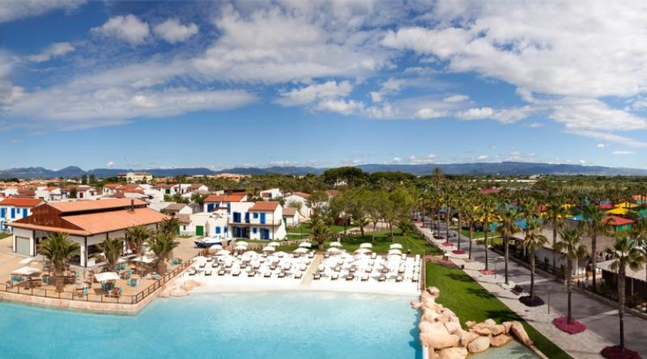
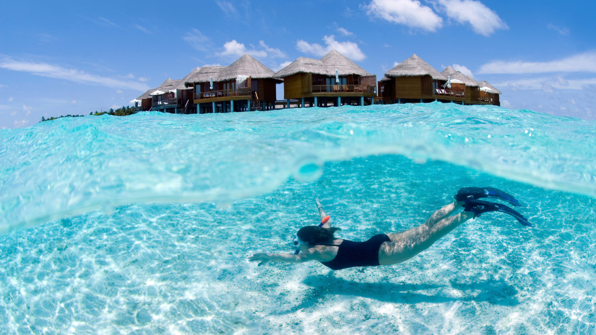

Travel
If there's one thing I am determined to do in life it's to travel to as many countries as I can to see what the world has to offer. I have already travelled to many countries but I hope to visit many more in the next few years. Among the places I have travelled are Spain, Germany, England, France, The Netherlands, and Italy.
Spain
Visit Cambrils Park Resort Website
Spain is the country I have visited most, as I'm sure is the same with most people. I have been there roughly 7 times and each visit was highly enjoyable. My favourite place to go in Spain however, is Cambrils Park Resort. My family and I have been to this resort four times and it is undoubtedly a beautiful stay each and every time. From having a pool, gym, restaurants and even a beach on site, to the site being situated two minutes from two stunning towns, it has everything you could possibly want and more!I have also visited places in Spain such as Barcelona and Madrid which are great days out, particularly for shopping and scenery.

Paris
Visit DisneyLand Paris Website
I have visited France many times, however, my trip to Paris three years ago is undoubtedly my favourite visit. In transition year I took part in our school's French Exchange programme which allowed us to stay in our french partner's home outside Paris for a week. During this trip, my class and I did many things, however, my trip to Paris and Disney Land were of course my favourite. From shopping on the Champs Elysees and seeing the Eiffel, to witnessing the magic of fireworks blasting off in DisneyLand, there is an endless list of great things to do there and I cannot wait to revisit soon.
The Maldives
Visit Maldives Website
Currently, the place I would like to visit the most is The Maldives. I have always wanted to visit the typical tropical islands that you often see on instagram and various blogs and The maldives certainly has me overwhelmed by its natural beauty.The sands are white as the smiles of the locals, where fish swim happily in the warm waters of the Indian Ocean, where the weather is a dream, and the deep rays of the sun wait to engulf you in their arms.There is an abundance of exciting and adventurous things to do there inluding island hopping,Jet ski & Kayaking, Kite surfing,Parasailing, Water skiing, scuba diving and simply relaxing. Needless to say,it is at the top of my travel bucketlist at the moment!
